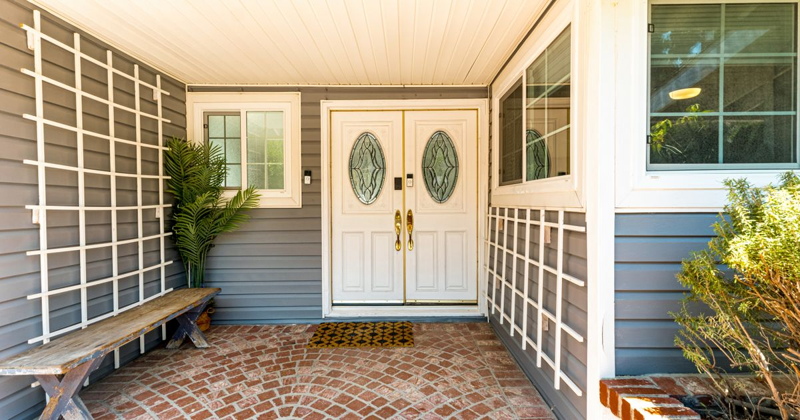

Understanding your home's value
Reverse Mortgage Appraisals in Ontario: What to Expect
Your home may have a tax assessment, an online estimate, and a price you would hope to receive if you sold. A reverse mortgage lender needs a valuation for a different purpose. Here is what that means, how to prepare, and what to ask before spending money.

Why does a reverse mortgage need an appraisal?
The home is the security for the loan, so the lender needs a supported view of its value. A number entered into a calculator is a useful starting point, but it is not the final lending decision.
The Financial Consumer Agency of Canada identifies the home's condition, property type, and appraised value among the factors affecting how much you may borrow. Your age, the ages of other owners on title, and the lender also matter.
HomeEquity Bank describes an independent appraisal as part of setting up a CHIP reverse mortgage. EQ Bank's published process says it orders an appraisal after receiving the requested documents. Ask about the process for the particular lender and product you are considering.
Appraised value, MPAC assessment, and an online estimate
Different numbers can all relate to the same home without answering the same question.
- A mortgage appraisal is a professional opinion of value for a stated purpose and date. The lender uses an acceptable valuation as part of its financing review.
- An MPAC assessment supports Ontario property taxation. MPAC values groups of properties using a common valuation date and a consistent method. Its figure is not automatically the home's market value today or a substitute for the lender's report.
- An online estimate or suggested listing price may help you start a conversation. It does not establish what a lender will accept or what a buyer will ultimately pay.
You do not need to make these numbers match. You do need to understand which number the lender is using before making plans around the money.
What does the appraiser look at?
The Appraisal Institute of Canada explains that a property visit helps the appraiser document the home. They then analyse market information and relevant comparable properties to form their opinion.
Depending on the assignment, the visit may involve:
- Looking at the size, layout, and physical features of the home
- Observing finishes, improvements, and visible condition
- Noting repairs or deficiencies that may affect value
- Checking relevant features of the lot, garage, or other buildings
- Asking when additions or major renovations were completed
- Taking measurements and photographs for the report
The inspection is only part of the work. Do not expect a final value at the front door when the visit ends. Comparing properties and analysing the market happens afterward.
A valuation visit also serves a different purpose from a detailed home inspection. If you need an answer about a possible structural, electrical, or other building problem, ask which qualified professional should assess it.
How to prepare without turning the house upside down
You do not need to make your home look like a staged listing. Focus on safe access and accurate information.
- Confirm the appointment and identity. Ask who is coming, which company they work for, how long to allow, and which spaces they need to see.
- Make access manageable. Clear a safe path to the rooms and areas requested. If stairs, a locked space, mobility needs, or a pet require planning, tell the appraiser in advance.
- Gather relevant property information. A short list of major renovations, approximate dates, permits or plans you have, and known repair issues can help the appraiser understand the home.
- Explain unusual features accurately. Do not describe an unfinished space as a finished bedroom or a possible rental area as a legally approved unit without supporting information.
- Ask about photographs. Discuss which pictures are needed, consent for interior photos, and how to keep private papers or personal photographs out of the images.
Do not rush into an expensive renovation just to pursue a higher appraisal. The amount spent on an improvement does not necessarily add the same amount to market value. Ask about any property concern first, then decide whether the work makes sense for your home and budget.
What will the appraisal cost?
There is no single fee that fits every Ontario property or lender. The work required can vary with the property and the assignment. An appraisal is also separate from other potential costs such as legal advice, setting up the mortgage, and registration.
Before the report is ordered, ask:
- What is the total appraisal charge, including any applicable tax?
- Do I pay now, or is the fee handled another way?
- What happens to the fee if I stop the application or the loan is declined?
- Could extra visits, travel, or another report create another charge?
- Will I receive the value, a summary, or a copy of the report?
Ask for the answers in writing. Paying for a valuation does not guarantee that a mortgage will be approved, and you should not assume a fee will be refunded if the application does not proceed.
What if the appraisal comes in lower than expected?
This can be disappointing, especially when you have already pictured how the funds would help. First, ask how the value affects the lender's offer and the cash available after costs and existing debts.
If there is a specific factual concern, such as a missed addition or an incorrect property detail, ask the lender about its review process. Provide the supporting information you have. A review may correct an error, but it does not promise a higher value.
Before paying for another report, confirm whether the lender will accept it and whether a second appraisal is actually useful. An asking price on another house, or what a neighbour hoped to receive, is not the same as reliable evidence of a comparable completed sale.
Most of all, avoid committing to a large expense or promising a gift based only on an early estimate.
A higher value does not mean the full amount becomes cash
The appraisal helps determine a borrowing limit. It does not tell you the amount you will have left to use. Existing loans secured against the home may need to be repaid, and costs may reduce the available proceeds.
Ask for a written breakdown showing the approved amount, any amounts to repay, all costs, and how much will actually be released to you. The available amount and timing also depend on the advance option you choose.
For the broader borrowing calculation, see how reverse mortgage amounts are determined in Ontario. If you still have a mortgage or HELOC, the existing mortgage guide explains why the amount owed matters.
Can I have a copy of the report?
Ask before the appraisal is ordered. The Appraisal Institute of Canada explains that, for mortgage lending, the lender is often the appraiser's client even when the homeowner pays the fee. The report is prepared for that client's specified use.
That relationship affects who may receive and rely on it. Paying the fee does not, on its own, mean the appraiser can release the report directly to you. Ask the lender about its policy and the required authorization.
Keep the appraisal in perspective
A home can be worth enough for a reverse mortgage and the loan can still be a poor fit for the household. You need a plan that works after the valuation, not just a number that looks encouraging.
Interest and fees can increase the debt and reduce the equity left for a later move or your estate. Property upkeep, insurance, and taxes still need room in your budget. If you expect to sell soon, early repayment charges deserve attention too.
Compare the loan with an affordable conventional mortgage or HELOC, using savings carefully, or downsizing. The appraisal answers a property question. It cannot decide which retirement choice is right for you.
Sources checked for this article
- Financial Consumer Agency of Canada: Reverse mortgages
- HomeEquity Bank: Reverse mortgage setup costs
- EQ Bank: How a reverse mortgage works
- Appraisal Institute of Canada: Guidance for residential property owners
- MPAC: How sales affect your property assessment
Questions people ask about this
Do I need an appraisal for a reverse mortgage in Ontario?
Expect the lender to require a property valuation as part of its review. HomeEquity Bank describes an independent appraisal, and EQ Bank says it orders an appraisal after receiving the requested documents. Confirm the chosen lender's process before paying for a report yourself.
Can I use my MPAC assessment instead?
An MPAC assessment is prepared for property taxation using a specified valuation date. It is not automatically a substitute for the valuation required by a mortgage lender. Ask the lender what it will accept.
What does the appraiser look at?
The appraiser considers the property's characteristics, size, condition, improvements, location, and relevant market evidence. An inspection may include measurements, questions about renovations, and photographs. The valuation analysis continues after the visit.
Does a reverse mortgage appraisal guarantee approval?
No. Appraised value is one part of the lender's decision. Borrower ages, property eligibility, existing secured debts, and other lender requirements also affect approval and the amount available.
Will I receive a copy of the appraisal?
Ask the lender before the report is ordered. For mortgage lending, the lender is often the appraiser's client even when the homeowner pays. Access to the report depends on the client's authorization and the applicable release process.
What if the appraisal is lower than I expected?
Ask the lender how to raise a factual concern, provide supporting information, and have the borrowing and available cash figures recalculated. A review does not guarantee a higher value. Confirm the lender's requirements before paying for a second appraisal.
This article is general education for Ontario residents, current to October 8, 2026, and is not legal, tax, investment, or financial advice. Appraisal requirements, fees, property eligibility, borrowing amounts, report access, and approval vary by lender, product, property, and borrower. Confirm the lender's written process and obtain appropriate independent advice before proceeding.